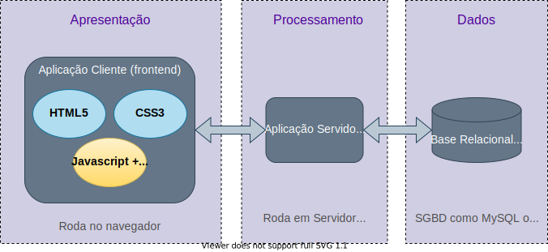

Atlântica - Instituto Universitário
Javascript
GSC - Laboratório de Desenvolvimento de Sistemas Web
Atlântica - Instituto Universitário
GSC - Laboratório de Desenvolvimento de Sistemas Web
Fernanda Passos

Node.js
// até o final de uma linha./* e */.const: variável com valor constante, somente leitura.var: variável que pode ser lida ou escrita declarada no escopo da função ou global.let: variável que pode ser lida ou escrita declarada no escopo do bloco atual.var.Aritméticos
| Operador | Descrição |
|---|---|
+ |
Soma |
* |
Multiplicação |
- |
Subtração |
/ |
Divisão |
% |
Resto da divisão inteira |
++ |
Incremento |
-- |
Decremento |
** |
Exponenciação |
Lógicos/Booleanos
| Operador | Descrição |
|---|---|
&& |
and |
|| |
or |
! |
not |
Comparação
| Operador | Descrição |
|---|---|
== |
Igual a (valor) |
=== |
Igual e mesmo tipo |
!= |
Diferente (valor) |
!== |
Diferente (valor e tipo) |
< |
Menor que |
> |
Maior que |
<= |
Menor ou igual |
>= |
Maior ou igual |
=== e !==:
== e !=.const!=, comando de atribuição sempre terminado em ;."uma string".'outra string'.+:
"string" + " concatenada".length.if/else.switch/case.?.else é opcional.if quanto no else pode-se usar chaves.
default:
break:
switch/case.break, execução continua para as linhas abaixo, mesmo associadas a outras condições:for.
while ou a construção do/while.
forfor.
for “básico”.for in.for of.forif, chaves são opcionais se corpo da repetição tem apenas um comando.whileif e no for, chaves são opcionais se corpo da repetição tem apenas um comando.do/whiledo, mas teste é realizado após cada iteração.
if e no for, chaves são opcionais se corpo da repetição tem apenas um comando.function nome([arg1 [, arg2 [, ...]]]) {
// Corpo da função
// Opcionalmente, função pode retornar algo:
return valor;
}Observações
Observações
if.function sub(a, b) {
return(a - b);
}
function soma(a, b) {
return(a + b);
}
function sel(f1, f2, s) {
return(s == 0 ? f1 : f2);
}
var f = sel(sub, soma, 1); // retorna função soma.
f(10, 4); // executa a função soma.| Função | Propósito | Exemplo |
|---|---|---|
| string() | Converte números em strings | string(3) |
| Number() | Converte string em número | Number(“3”) |
| Math.sin() | Calcula o seno do argumento | Math.sin(3.14) |
| Math.cos() | Calcula o coseno do argumento | Math.cos(3.14) |
| Math.sqrt() | Calcula a raiz quadrada do argumento | Math.sqrt(17) |
alert(): apresenta uma caixa de alerta para o usuário com a mensagem especificada como argumento.console.log(): imprime a mensagem especificada como argumento no console do browserconsole.log():prompt().
prompt.alert().. (i.e., ponto):
carro.fabricante.carro["fabricante"].this referencia o objeto que o contém.var carro = {
fabricante: "Fiat",
modelo: "Punto",
ano: 2015,
portas: 4,
log: function() {
console.log(this.fabricante + " " + this.modelo + " fabricado em " + string(this.ano));
}
};. (i.e., ponto):
carro.log().Importante
length.
for...offor ... of varre elementos de um objeto iterável.
for...infor...of, mas itera por propriedades de um objeto.var carro = {
fabricante: "Fiat",
modelo: "Punto",
ano: 2015,
portas: 4,
};
var i;
for (i in carro) alert(i + ": " + String(carro[i]));Importante
let percentem apenas ao escopo do bloco.var a = 1;
{
let a = 5;
alert("Dentro do bloco, a = " + String(a));
}
alert("Fora do bloco, a = " + String(a));constvar e let, a palavra-chave const permite declarar variáveis.let, variáveis declaradas com const são de escopo de bloco.const torna a variável somente-leitura.
Importante
const torna a variável somente-leitura, mas não necessariamente imutável!constsetTimeout().clearTimeout().var a = 1;
function f(arg) {
arg *= 3;
alert("Na função, arg = " + String(arg));
}
f(a);
alert("Após a função, a = " + String(a));var a = ["Fiat", "Jaguar"];
var b = {prop1 : 10, prop2 : 20};
function f(arg1, arg2) {
arg1[0] = "Opel";
arg2.prop1 = 30;
alert("Na função, arg1[0] = " + String(arg1[0]));
alert("Na função, arg2.prop1 = " + String(arg2.prop1));
}
f(a,b);
alert("Após a função, a[0] = " + String(a[0]));
alert("Após a função, b.prop1 = " + String(b.prop1));arguments.class NomeDaClasse {
constructor() { ... }
metodo_1() { ... }
metodo_2() { ... }
metodo_3() { ... }
}new:Construtor
constructor.class Carro {
constructor(fabricante, modelo, ano, portas) {
this.fabricante = fabricante;
this.modelo = modelo;
this.ano = ano;
this.portas = portas;
}
log() {
console.log(this.fabricante + " " + this.modelo + " fabricado em " + string(this.ano));
}
};
var carro1 = new Carro("Fiat", "Punto", 2015, 4);
var carro2 = new Carro("Jaguar", "S Type", 2008, 4);
carro1.log();extends:class Carrinha extends Carro {
constructor(fabricante, modelo, ano, portas, lugares) {
super(fabricante, modelo, ano, portas); // Chama construtor da classe original
this.lugares = lugares; // Complementa com uma nova propriedade
}
ocupacao(passageiros) { // Complementada também com métodos novos
return lugares - passageiros;
}
};class Carro {
constructor(fabricante, modelo, ano, portas) {
this.fabricante = fabricante;
this.modelo = modelo;
this.ano = ano;
this.portas = portas;
}
static help() {
console.log("Classe que define informações e comportamentos básicos de um carro.");
}
};
var carro1 = new Carro("Fiat", "Punto", 2015, 4);
Carro.help(); // Permitido
carro1.help(); // Erro!